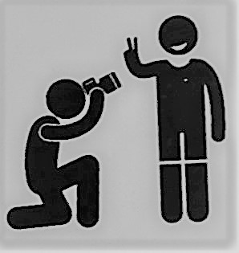
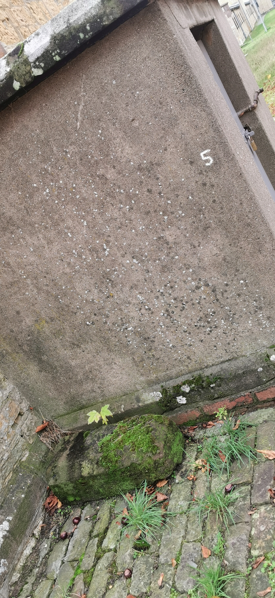

Kehrst Du der Mensa den Rücken zu, findest du ein kleines Gebäude, zwischen Hecken versteckt.
Dort zu finden ist eine kleine Werkstatt für Zweiräder. Wie heißt sie?
Was bin ich? Ich habe viele Blätter und bin doch kein Baum.
Wenn du mich aufmachst, gibt es Wörter und Bilder zu schaun.
Wo bin ich wohl zu finden? Gehe in das richtige Gebäude und betritt den Raum mit den Schließfächern.
Drehe dich nach rechts und betrachte die rechte Wand. Welche Nummer hat das 3. Schließfach von unten, 5. von links?
Ganz in der Nähe sind drei Gebäude, die durch eine Brücke verbunden sind.
Sie sind einander so verbunden, dass Du alle drei Rätsel lösen musst, damit sie dir den nächsten Hinweis verraten.
Hänge die Lösungen der Reihenfolge entsprechend hintereinander, um den Code zu erhalten.
SP
Gegenüber der Herrentoilette befindet sich eine Tür. Wie ist dieser Raum bezeichnet?
SO
Es gibt einen Raum, der von drei Seiten aus erreichbar ist. Eine Seite ist ganz aus Glas.
Von seiner Decke hängen graue Scheiben. Wie viele hängen dort (Lampen ausgenommen)?
SQ
Wie viele große Rolltore lassen sich hier zählen?
Gehst du um das SO-Gebäude herum, kannst du auf der anderen Seite der Straße ein hellblaues Haus sehen.
Folge der Sedanstraße in diese Richtung, bis du an ein einsames Hochschul-Gebäude gelangst.
Dort wirst du von Worten auf Holz begrüßt. Welches Wort muss hier ergänzt werden:
"...und langsam häufen sich auf dem Feld die _____ "
So weit draußen wollen wir nicht bleiben. Mache dich auf den Weg zurück.
Das Abenteuer führt dich zu dem Gebäude, das man SB nennt.
Erreiche das oberste Stockwerk über die Haupttreppe oder den Fahrstuhl. Gehe nun nach links.
Welche Nummer hat der 7. Raum auf der rechten Seite?
Verlasse das Gebäude und gehe bis zur Mitte der Rasenfläche.
Von dort kannst du das folgende Rätsel lösen und weißt somit, in welches Gebäude du als nächstes gehen musst:
"Muss Tag und Nacht auf Wache stehen, hat keine Füße und muss doch gehen, hat keine Hände und muss doch schlagen.
Betrete das Gebäude und gehe ganz nach unten.
Irgendwo dort befindet sich ein Raum mit diesem Symbol auf dem Schild.
Um welche Art von Raum handelt es sich?

Verlasse das Gebäude in Richtung der blauen Türen. Sie gehören dem Gebäude, das du als nächstes aufsuchen möchtest.
Finde einen Eingang und suche nach dem Postfach für Hauspost. Welche Nummer hat es?
In dem Gebäude mit Aula, geht Wilhelm Müller aus dem nach ihm benannten Hörsaal.
Er hat vor die nächste Toilette aufzusuchen. Als er vor der Tür zur Herrentoilette steht,
überlegt er es sich jedoch anders und nimmt die Treppe rechts von ihm.
Er geht durch eine Glastür und biegt nach links ab. Dann geht er durch eine weitere Glastür und bleibt stehen.
An der Wand ist ein blauer Kreis mit einem Pfeil. Was steht darin?
Als nächstes gehe in das Gebäude, das von oben aussieht wie ein kackender Dinosaurier, welcher Richtung Norden blickt.
Suche den 3D-Scanner-Raum im ersten Stockwerk. Welche Quersumme ergibt sich aus der Raumnummer?
Vor dem AA-Gebäude steht ein Basketballkorb. Werfe ein paar Körbe, wenn du magst.
Gehe dann zu dem Gebäude, das in Blickrichtung des Korbes liegt.
Welche Raumnummer hat die Garage, auf die du hinunterblicken kannst?
Da du dich bis hier hervorragend geschlagen hast, erhältst du für das nächste Rätsel einen Tipp:
Suche in der Nähe von SE, SF und SG! Finde den Ort, an dem das beigefügte Bild gemacht wurde.
An welchem Gebäude befindest du dich jetzt?

Östlich von hier ist noch ein Gebäude, das du nicht besucht hast.
Gehe zur westlichen Treppe. Wenn du unter der Treppe den Blick nach oben richtest, kannst du ein Codewort entdecken.
Von der Giraffe geht es nun zum Frosch! Sie dir den Innenhof im Frosch an.
Dort sitzen drei Freunde beisammen, fern von allen Pflanzen. Aus welchem Material sind sie?
All diese Rätsel haben hungrig gemacht, oder nicht? Wo kriegt man hier in der Nähe denn wohl was zu essen...
Zähle dort alle Schließfächer und teile die Anzahl durch 6.
Willkommen, Abenteurer!
Bist du bereit, auf die große Westerberg-Schnitzeljagd zu gehen?
Glaubst du, du hast das Zeug dazu, alle Rätsel zu lösen?
So geht's:
Alle Gebäude, deren Rätsel du noch nicht gelöst hast, erscheinen rot. Knackst du ihren Code, färben sie sich grün. Die Fragen findest du, indem du den Button antippst. Meistens musst du zur Lösung einen Code/ ein Wort/ eine Zahl eingeben. Ist deine Antwort korrekt, geht es automatisch zum nächsten Rätsel!
Viel Spaß!
LOS GEHT'S!
Herzlichen Glückwunsch!
Du hast dich allen kniffligen Herausforderungen rund um den Campus gestellt und diese mit Bravour gemeistert.
Ohne Zweifel kannst du dich jetzt als wahres Genie bezeichnen.
Natürlich bleibt ein solcher Ehrgeiz nicht unbelohnt. Gebe in das folgende Feld deinen Abenteurer-Namen oder den Namen deines Teams eine
und erhalte deinen Preis!